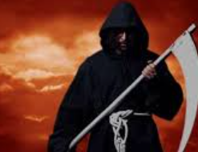

At first punisher is a normal man who follows all the ethics. He used to be a calm person and belived in the word "KARMA". But one fine day, he got shoplifted and in that incident he lost his baby girl. That incident have changed him, he went throgh all th news and spent most of the time in library. There he used to read the mythological books and suddenly one fine day he found a source in internet to transform into the Punisher who is the vigilante dispenser of justice. He kills those who doesn't abide by the system. He is the one that comes from hell to punish all those people. He uses the punishing techniques utilized in a mythological book on punishments in Hell which provides regard to the type of punishment meted for each quite sin committed. He leaves certain clues behind for the cops to seek out out.
